The main impact of a 200 basis-point (2.00 percentage-point) cut in United States interest rates on Malaysia is a 0.04% rise in GDP by the eleventh quarter — a minimal spillover. Malaysia ranks ninth by absolute GDP response and sits in the “minimal” band. The shock is a US monetary easing, and the model treats it as an external financial impulse that reaches Malaysia mainly through asset prices, the exchange rate, and the cost of capital rather than through a large direct demand channel. The headline GDP peak of 0.0372% above baseline in Q11 is small in absolute terms, and the path is not a permanent level shift: after peaking it decays steadily, turning slightly negative by Q20 at −0.0024%. That pattern — a modest, delayed positive bump that fades and then overshoots mildly to the downside — is the central story for Malaysia.
Demand and trade. Household consumption responds positively but weakly, peaking at 0.0185% above baseline in Q12 and essentially returning to zero by Q20 at −0.0001%. Private investment is the strongest domestic demand component, rising 0.1262% above baseline at its Q8 peak, consistent with a lower cost of capital and easier financial conditions. Net exports — the trade balance, since this model does not split imports from exports — move the other way: net exports fall to −0.0771% below baseline at Q8, the largest negative contribution in the demand block, before recovering through zero around Q14 and ending slightly positive at 0.0021% in Q20. Government spending is barely moved, with a peak deviation of only −0.0037% at Q10 and a small positive reading by Q20. Government debt rises gradually, peaking at 0.0308% above baseline in Q17 and remaining at 0.0271% by Q20, reflecting the cumulative effect of weaker nominal activity and the fiscal stance rather than any large discretionary response.
External / FX. The real exchange rate — where an increase is a real depreciation, a weaker and more competitive home currency, and a decrease is a real appreciation — falls to −0.2822% at its Q8 trough. That is a real appreciation of the ringgit against the baseline, not currency strength in the usual loose sense: the model’s RER series is down, so the home currency is stronger in real terms. The timing lines up with the net exports deterioration: the real appreciation peaks in the same quarter as the net exports trough, and as the RER move fades from Q9 onward, net exports recover in parallel. By Q20 the RER deviation is only −0.0081%, and net exports have turned marginally positive. The link is direct: a stronger real exchange rate makes Malaysian goods relatively less competitive, weighing on the trade balance, while the subsequent unwinding of that appreciation removes the drag.
Labour. Employment rises modestly, peaking at 0.0215% above baseline in Q14 and still 0.01% above baseline at Q20. Unemployment falls in mirror image, with the largest improvement — a −0.0092 percentage-point decline — at Q13, and it remains −0.003 percentage points below baseline at Q20. Real wages are the notable labour-market casualty: they fall to −0.0611% below baseline at Q10, the deepest point in the labour block, before recovering through zero around Q17 and ending 0.037% above baseline in Q20. The wage path is initially negative because inflation and marginal cost dynamics outrun nominal wage adjustment, then turns positive as the price pressures fade and real activity improves.
Prices. CPI inflation falls sharply at the start, with a peak deviation of −0.0599 percentage points in Q1, then fades quickly and is mostly gone by Q3. The cumulative CPI effect over Q1–Q12 is −0.0499 percentage points, a small net disinflationary contribution. Domestic inflation follows a similar front-loaded pattern, peaking at −0.0419 percentage points in Q1 and mostly fading by Q3, before turning positive in Q9 and ending at −0.002 percentage points in Q20. Firms’ marginal cost rises modestly, peaking at 0.0225% above baseline in Q11 and fading by Q18, ending at −0.0014% in Q20. The price block therefore shows an initial disinflationary impulse that reverses into mild positive inflation pressure in the middle quarters, before settling back near baseline.
Financial conditions. The local policy rate falls initially, with a peak deviation of −0.0371 percentage points in Q3, then turns positive from Q10 onward and ends 0.0178 percentage points above baseline in Q20 — a small tightening late in the horizon. Government 2-year yields first dip to −0.0295 percentage points in Q1, then rise to a peak of 0.0304 percentage points in Q12, fading by Q19. Government 5-year yields rise modestly, peaking at 0.0135 percentage points in Q10 and turning slightly negative by Q19. Government 10-year yields are nearly flat, peaking at 0.0059 percentage points in Q11 and returning to zero by Q20. Bond prices rise to 0.1885% above baseline at Q8, then fall below baseline from Q11 onward, ending at −0.0742% in Q20. Equity prices rise to 0.2857% above baseline at Q8, fade by Q14, and turn negative from Q17, ending at −0.0301% in Q20. Tobin’s Q — the value of installed capital — peaks at 0.0884% above baseline in Q8, fades by Q14, and ends at −0.0262% in Q20. House prices rise steadily, peaking at 0.0427% above baseline in Q15 and remaining at 0.032% by Q20. Bank credit supply barely moves, peaking at just 0.0006% above baseline in Q16 and ending at 0.0005% in Q20. Lending spreads are unchanged throughout, at 0.0 percentage points in every quarter.
Sectoral and capital. Manufacturing GDP is the strongest sectoral response, rising 0.0878% above baseline at its Q8 peak, fading by Q13, and ending essentially flat at 0.0003% in Q20. Services GDP rises more modestly, peaking at 0.0213% above baseline in Q11, fading by Q18, and ending at −0.0014% in Q20. The capital stock accumulates slowly, peaking at 0.0055% above baseline in Q15 and remaining at 0.0048% by Q20 — a small but persistent level effect from the investment response.
Timing. The GDP hit is largest in Q11, at 0.0372% above baseline. It has not fully faded by Q20, where it turns slightly negative at −0.0024%, with the sign change occurring in Q20 and the effect mostly faded by Q18. The equity and investment peaks arrive earlier, in Q8, while the labour-market and house-price peaks arrive later, in Q13–Q15. The net exports trough is also in Q8, coinciding with the real appreciation peak. The sequence is therefore: financial conditions and investment respond first, trade and the exchange rate move next, activity and employment follow, and prices adjust throughout.
Close. These are model impulse responses versus baseline, not forecasts. They describe how Malaysia’s macro variables deviate from a no-shock path under a 200 basis-point US rate cut, given the model’s estimated transmission channels. The overall picture is a minimal spillover: a small positive GDP bump that peaks in Q11, a real appreciation that weighs on net exports around Q8, a modest investment and equity boost, a temporary disinflationary impulse, and a gradual fade that leaves most variables near baseline by Q20.
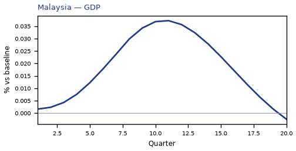
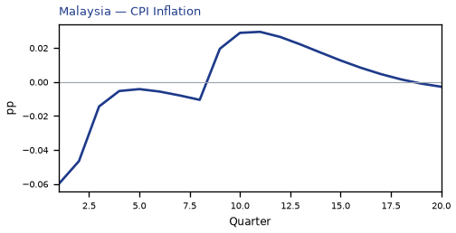
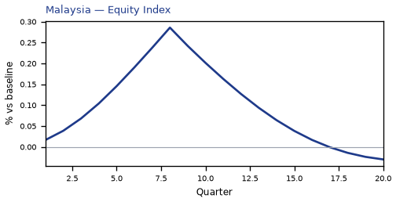
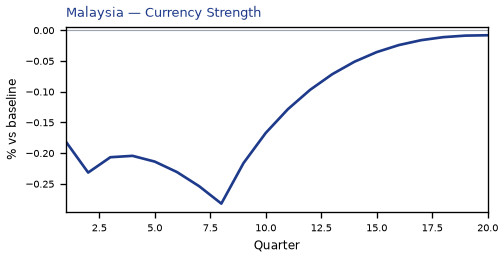
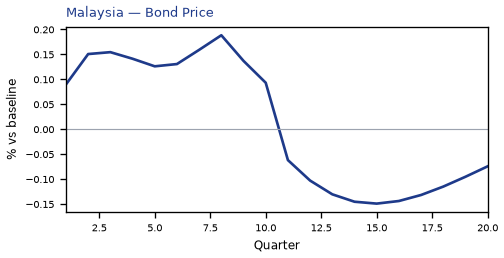
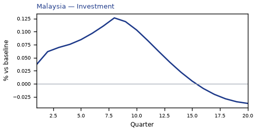
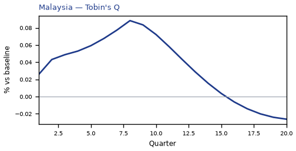
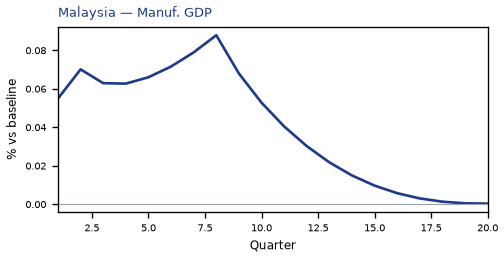
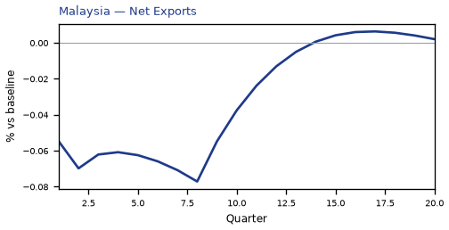
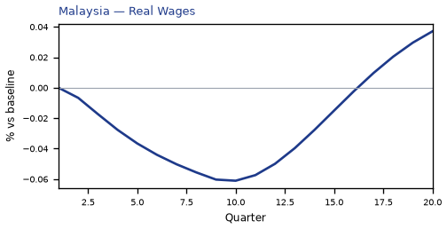
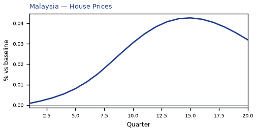
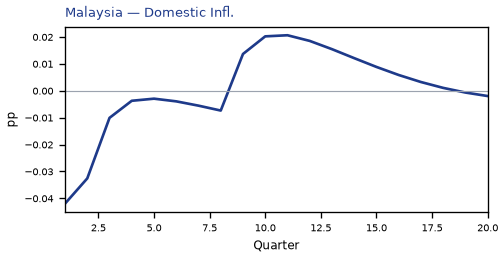
source=live · global_macro_v5 · contract v6 · Q1–Q20 JSON · not financial advice